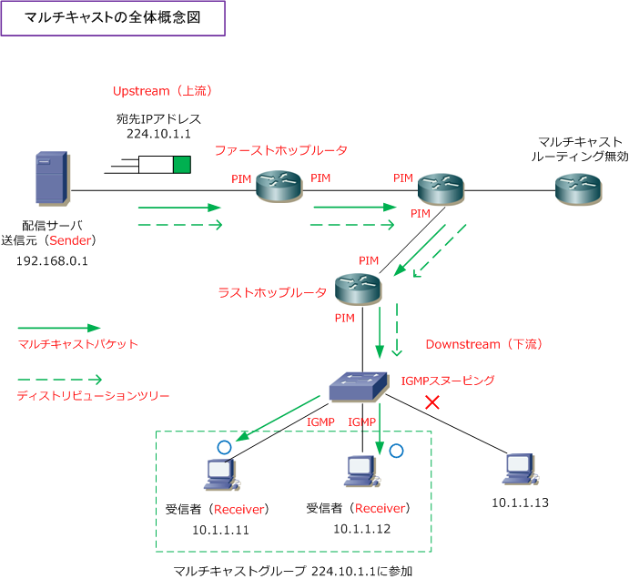

Multicast - words / conceptual model
マルチキャストの用語説明
マルチキャストで使用される用語の意味は以下の通りです。
| マルチキャストの用語 | 説明 |
|---|---|
| Sender | マルチキャストパケットを送信するサーバ |
| Receiver | マルチキャストパケットを受信するクライアント |
| ファーストホップルータ | Senderのセグメント上に接続されているルータ |
| ラストホップルータ | Receiverのセグメント上に接続されているルータ |
| Upstream | マルチキャストを送信するSenderへの方向（上流） |
| Downstream | マルチキャストを受信するReceiverへの方向（下流） |
| マルチキャストルーティングプロトコル | ディストリビューションツリーの生成と維持するためのプロトコル |
| ディストリビューションツリー | マルチキャストがルーティングされていくための経路（配布ツリー） |
| IGMP | ルータとホストとの間でマルチキャストパケットをやりとりするプロトコル IGMPには、IGMPv1、IGMPv2、IGMPv3の3つのバージョンがある |
| IGMPスヌーピング | マルチキャストのフレームをスイッチの全ポートからフラッディングさせない ように、マルチキャストのフレームをのぞき見して制御してくれるスイッチ技術 |
| PIM | ルータやL3スイッチなどで有効化するマルチキャストルーティングプロトコル PIMには、PIMv1とPIMv2がある（ 現在ではPIMv2を利用することが一般的 ） |
マルチキャストの全体概念図
下図の通り、マルチキャストパケットの通り道となるルータでは、マルチキャストルーティングを有効 にして、マルチキャストルーティングプロトコルであるPIMを有効化させる必要があることが分かります。 また、ルータと受信クライアント間ではIGMPでやり取りを行って、無駄なマルチキャストトラフィック をクライアントPCに転送しないようにスイッチで、IGMPスヌーピングを有効化させることが分かります。

その他、以下の基本用語の理解もしておきましょう。
| マルチキャストの用語 | 説明 |
|---|---|
| マルチキャストルータ | マルチキャスト対応のルータ（Ciscoでは ip multicast-routing と設定） |
| マルチキャストIPアドレス | クラスDアドレス（ 224.0.0.0 ～ 239.255.255.255 ） |
| マルチキャストMACアドレス | 01-00-5E から始まるMACアドレス |
| マルチキャストグループメンバー | マルチキャストのトラフィックを受信するホスト（Receiver） |
| マルチキャストグループ | マルチキャストのトラフィックを受信するホストの集まり（Receiverの集まり） |